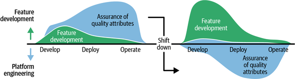
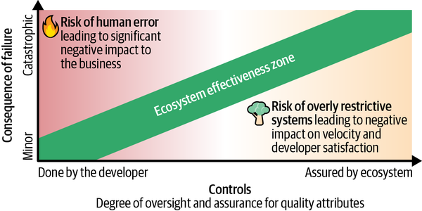
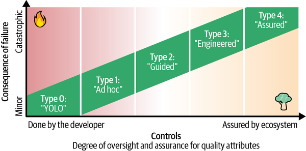

A system’s lifecycle—from conception to retirement—occurs in an ecosystem, not in a vacuum: it communicates with other systems, runs on top of another system, is monitored by a system, and so on.1 Indeed, understanding and changing the relationships between systems, and even the connections within each system, is a large part of an SRE’s work.2
A production platform is an organization’s abstraction layer for its collection of infrastructure: intersystem communication, CI/CD, observability, orchestration, capacity management, load balancing, and storage systems, to name a few. It often also includes shared operational tools, and it provides the context for using these building blocks, sometimes with an opinionated approach.
A well-designed production platform turns infrastructure into
an easy-to-use self-service product for developers and operators; a
poorly designed (or even undesigned) platform can easily become a
confusing mess. One organization’s production platform might be very simple: each
service runs on a shared physical machine, with manual releases done by
copying the source code, compiling it on the VM, and restarting the
binary, and with ad hoc monitoring performed by an operator SSHing in as needed to run
top and tail text logs. Another organization’s could be much more
complex: source code stored in Git with automatic CI/CD to an immutable
Kubernetes pod for each new commit, with incoming traffic automatically
cut over from one pod to the next. We’ve described much of Google’s
production platform elsewhere in this book (see Chapter 3) and in
the previous edition.
While the need for ecosystem coherence increases with organizational size and complexity, it’s generally worth thinking through how to make your platform’s components work together sensibly regardless of your organization’s scale. Ideally, a production platform enforces policy through technology, reducing the cognitive overhead for the engineers dealing with the infrastructure. The resulting reliability by default helps prevent classes of known outages at scale. A production platform also enables reliability best practices to be implemented centrally rather than manually in each individual system.
Platform engineering is the process of designing, building, maintaining, and evolving that ecosystem, over time, ideally with intent and foresight.3 Sometimes this work is done by—or directed by—a dedicated team, and sometimes it emerges organically from the aggregate decisions made over time by groups that were each thinking about their own parts of the platform without considering the whole—perhaps due to bounded rationality or local rationality. (And sometimes, the whole is too large and complex to treat as a single entity!)
SREs are often found on both sides of a production platform. On one side, they are customers of the platform, running services within that ecosystem, which may be internally facing, externally facing, or both. These may be product SREs who own one or a handful of closely related services that often have multiple layers from the frontend to the backend,4 or infrastructure SREs who operate some or all of the production platform’s shared infrastructure, such as storage, networking, or observability. Both types tend to develop deep expertise in their services, often bearing a large part of the development load.
A third archetype is the horizontal SRE team, which provides advice and consulting support to an entire product organization for incident management and system design, operates shared tools and services, and may set standards for how the organization builds and operates its services. Because they support many more distinct services,5 horizontal teams often engage less deeply with each of their services; instead, the primary production responsibility typically remains with the developers of those services. Such horizontal SRE teams tend to be primarily engaged in platform engineering.
In addition to the technical components of a platform, there are also policy and sociotechnical decisions to make. Questions that can help frame these decisions include:
How do systems gain access to the platform? Do they need special permissions to do so? Do they need to reserve capacity ahead of time?
How many instances of a system should we run—and where? How can we tell if that’s right or if we need to change it?
If we want our system to depend on another system, do we need to get permission to access it? Will there be quota limits, and if so, how are they set? What can we expect for performance?
Do services that depend on others need to pay for their usage? If so, how are they billed, and does that become actual usable revenue for those services or is it simply an accounting instrument?
Should we have common standards for, say, how to monitor systems or how to move data between them, or are teams free to make their own choices? Do we want to limit which languages are used in production?
Who can access control planes for debugging or changing settings?
Should we encourage (or even require) teams to reuse what’s already been built, or should they be free to reimplement or replace those pieces?
Do we want to make it hard to get things wrong, or do we want to make it easy to try new things even if they don’t work out?
There are, of course, a wide range of possible answers to each of these questions, and the answers that are appropriate will vary among organizations—and quite possibly even within an organization over time—based on risk tolerance, technical capabilities, budgetary and organizational considerations, and outright path dependency.
In defining a platform policy through documentation and code, you’re not only specifying how your platform will behave but also shaping how its users will approach and interact with it, and creating conditions and incentives that will influence its future evolution. Some of these effects will be obvious, predictable, and desired; others will emerge from the platform’s design, its explicit rules, its written and unwritten conventions, and the beliefs (correct or not) that its users hold about how it behaves.6
A good platform bears the responsibility for ensuring that infrastructure is reliable: interprocess coordination, task scheduling and orchestration, capacity management, and more fine-grained details such as message retries and access control. It provides developers with a consistent, principled approach to communication, extensibility, observability, supportability, and graceful degradation. The design decisions that are made, broad and fine, reflect both the lived experiences of the platform’s users and the technical opinions of its designers.
When most (or all!) application developers in an organization share the same platform, reliability is likely to be high—after all, everyone is depending on it and is, therefore, incentivized to make it succeed, setting the stage for a virtuous cycle. A single change to scheduling or resource management at the platform layer can affect every application that runs on it, for better or worse. Good SRE practices mitigate risk while enabling feature development velocity.
So, then, what is a production platform? In short, it’s the set of infrastructure and utilities that your systems are built on and the organizational culture that enables them.
At Google, we codify our reliability principles directly into the software SREs and feature developers use every day: an approved deployment system, for example, will have automated canary analysis, progressive rollouts, and integrated SLO monitoring built in. This approach strikes a critical balance between autonomy and standardization, thereby reducing cognitive overhead, accelerating onboarding, and ensuring a consistent baseline of reliability across the entire organization.
Google’s engineering culture has a long-standing tenet: “Don’t bring me a solution, bring me requirements.” This principle fostered innovation and autonomy, empowering teams to build solutions tailored to their specific needs. In the early days of SRE, the same philosophy was applied to reliability practices. Teams understood the need for their systems to be reliable and were free to build their own monitoring, deployment, and alerting systems to meet that requirement.
While effective in siloed environments, this model revealed its limitations as Google’s systems grew in scale, maturity, and interconnectedness. The “requirements only” approach led to significant duplication of effort, with countless teams independently solving the same fundamental problems. SREs moving between teams faced a steep learning curve, needing to master entirely new sets of tools and workflows.
The growing cost of ad hoc, team-local experimentation prompted a fundamental shift in our governance model: from “requirements only” to “requirements plus curated solutions.” This mandate is not for a single, monolithic toolchain. Rather, it represents a move toward providing a set of vetted, well-supported, and integrated tools that provide guidance and assurance for service operations. We curate solutions for a given problem, which allows teams to choose the best fit for their needs.
Curation, done well, makes the right way to manage change the easy way.
Style guides are a powerful tool in software engineering to ensure sustainability, consistency, and engineer mobility in complex codebases.7 A platform policy is a style guide for the production environment. It ensures that the use of the infrastructure is consistent across systems. This consistency may restrict the choices available to engineers, but it also enables them to avoid common pitfalls and makes it easier for them to work with systems they are not familiar with. This advantage not only increases the mobility of engineers across projects but is also helpful to SREs, who are often responsible for many different systems and have to work with their upstream and downstream dependencies.
Much like programming language style guides can be enforced through linters, a platform policy can be enforced through compliance checkers8 that evaluate the existing infrastructure configuration and usage and flag violations for engineers. This not only helps increase compliance with the policy but also reduces the cognitive load on engineers: instead of needing to remember all the rules and keep track of policy changes, they can rely on the tooling to highlight what needs to be changed, ideally by suggesting a fix right away.
There’s nuance to when and how these checks are applied. Checks can be performed in the editor, during config commit, or at runtime—for instance, suggesting using a better-supported API, or verifying that a newly added dependency declares itself to be sufficiently available for the service to use it safely before the code change is committed. Depending on the rule, these approaches may have different implementation costs. It’s also important to keep in mind how disruptive a check is for the engineers’ workflow. A premature check that causes a lot of noise in the editor can be as frustrating as a runtime check that requires you to redo a complicated rollout when the issue could have been flagged during editing or at commit time.
Not everything needs to be checked or enforced. When defining a set of rules, the key question is not “What rules should we have?” but “What goal are we trying to advance?” Introducing a new rule makes sense only if the value of compliance clearly outweighs the added end-to-end overhead.
There are also different levels of enforcement. A checker can issue a warning that the user can override or cause an error that prevents the change. Only use errors when you’re absolutely sure that there is no need for exceptions. Even then, an override mechanism (often referred to as “breaking glass”), perhaps requiring approval from the policy owners, should be in place for unforeseen situations.
Ideally, platform policies are implemented through a common production platform. Rather than developers having to understand and remember every detail, leading to approval fatigue and cognitive overload, systems can then simply use the platform defaults and be automatically compliant.
Let’s consider an analogy. If you were to picture a garden in your mind,9 what would you see? Is it a formal French garden intended to be viewed at a distance, with hedges and pavers and right angles? A desert garden emphasizing succulents? A Japanese garden with gentle curves and a bridge over a koi pond? A raised bed to grow herbs and vegetables? Or perhaps something else entirely?
In the same way that all of these are gardens, and the question of what belongs in that garden depends on what the garden is intended to be, so too must the choices that a platform’s maintainers make depend on what the platform is intended to be, do, and make possible for its users to accomplish.
Consider the Cynefin framework, a popular model to think about the complexity of problems and how to take action in different contexts. This framework describes five decision-making domains: Clear, Complicated, Complex, Chaotic, and Confusion.
In the Clear context, established best practices offer an easy-to-follow, step-by-step path to a solution. Complicated contexts require additional expertise and judgment to make a decision. In Complex environments, cause and effect can only be deduced in retrospect; decisions are made through probing. Chaos is on the far end of the spectrum, where cause and effect can no longer be understood at the systemic level; how a decision affects outcomes can only be determined through experimentation. Confusion is at the center of the model, where it isn’t clear which domain the given problem is in.
Ideally, we would like our production ecosystems to eventually fall into the Clear domain, or at least, the Complicated domain. However, the plethora of options, the complexity of interactions, and the need to experiment and explore rapidly often put production ecosystems into the Complex and sometimes even the Chaotic domain. Even worse, we often underestimate the inherent complexity of large distributed systems and end up in the Confusion domain.
A goal for a production platform, therefore, is to manage and reduce the accidental complexity10 of dealing with production, by moving the problems of interacting with, controlling, observing, and operating the production ecosystem from Chaotic to Complex to Complicated, and finally, to Clear.
When a platform guides engineers in how to use the production environment, their decision-making process becomes clearer and easier. They can follow established templates and avoid failure-prone experimentation. The decreased need for developers to understand and make choices about how to configure a system in order for it to run effectively in production can sharply increase developer velocity and productivity, allowing developers to concentrate on their subject matter expertise rather than spending their time on what appears to be overhead.
Moving topics to a simpler domain is a classic 90/10 problem: 10% of the problem accounts for 90% of the work. By moving the straightforward 90% of how to run in production to the Clear domain, we enable engineers to focus their effort on the remaining 10% that requires deep expertise to solve.11
Two of the technical tools we use in building a platform are abstractions and coupling.17 These allow us to build a flexible platform out of simple, well-defined parts put together in coherent ways that make sense for the platform’s users.
Coupling refers to how distinct components or systems are connected and interact. Examples include making an RPC call from one service to another, or writing and then reading state from a shared database. This lets us build larger and more complex systems by composing pieces with smaller scope. However, unlimited freedom in coupling leads to systems that are difficult to reason about and have nonobvious relationships between components.
Abstractions help us encapsulate complexity within a system; only those responsible for maintaining the abstraction need to understand what lies behind it. For instance, Google’s Borg cluster operating system handles job scheduling and task placement, so that its users can specify their jobs’ resource and redundancy needs without having to identify specific machines to run on or manually restart tasks if they fail or need to be updated to a new version.18 This abstraction hides the underlying implementation details by default (although users can still see them if needed), simplifying the mental model users must maintain to successfully use the system.
Gardeners can shape what’s in a garden by intervening in two ways:
Directly, by acting on the garden—removing a weed, planting a tree in a precise spot described on the plan, or pruning a hedge
Indirectly, by creating the conditions for the garden to grow in a particular way—improving the soil, ensuring there’s an adequate water supply, or encouraging pollinators with attractive flowers
The two modes differ in the degrees of precision and effort needed to achieve a given outcome: you can’t guarantee that bees and butterflies will come to your garden, but you can make it more likely that they will do so. Similarly, while you may be able to shape a garden pond more precisely with a child’s sand shovel, it will take much more effort than using a backhoe.
In the same way, we can both directly and indirectly affect our production platform. For instance, as a direct control, we can configure a service to run with our desired level of task redundancy, and the platform will update it accordingly. Or, as an indirect control, we can write a policy that all services running in production must have a responsible owner with a suitable on-call rotation and record that information in a central database. Over time, though, we’ll inevitably end up with many services for which the information is out of date, due to organizational changes—let alone the services for which it was never entered in the first place, for whatever reason. We can try to remedy this drift by periodically auditing the state of production against the database. However, this will require significant manual effort, and once the audit is complete, drifting will start again.
The obvious, albeit potentially expensive, alternative is to automate. Automatically checking and enforcing a platform’s rules means that we don’t need to intervene directly. We can start by verifying, when we start running a job that receives user-facing traffic, that an on-call rotation exists. We can then check the rotation’s properties: Are there people in the rotation? Does its alert routing and escalation configuration meet our standards? And so on.
Setting strong defaults and bounding choices in production reduces cognitive load by reducing the number of decisions users of your production platform need to understand and make. Limiting the acceptable languages and dependencies in your environment, for instance, allows you to concentrate on better supporting the preferred set, increases interoperability between systems, and reduces the degree of unfamiliarity that a developer may encounter when working with a new-to-them service—though at the cost of reducing flexibility. This consistency enables engineer mobility and makes it easier to move services between teams. The latter is especially important to SRE because onboarding a new service that uses very different technical choices from the services SREs already support can quickly lead to cognitive overload.
Setting and enforcing a policy—ideally automatically—means that less intervention is needed. When every option is on the table, every decision requires a thorough review. This takes time and effort, can lead to unnecessary conflict, and, most importantly, increases cognitive load. When you need to bikeshed every small choice, you risk missing the bigger picture. Setting a policy for available options frees up cognitive bandwidth to discuss the more subtle and complex implications specific to the service at hand and its business domain. It can be very valuable to institute a sensible and safe default, so that there’s no need to consult an expert in straightforward cases. Instead of spending time arguing about which monitoring tool should be used and how it should be configured, teams can invest that time in discussing which SLOs make sense for the service and how that impacts its architectural design. Removing unnecessary choices uplevels the work.
Of course, no platform can or should fully eliminate choice. Different systems have different needs, and a one-size-fits-everyone approach will not work for anyone. The goal isn’t to prevent people from making choices altogether; it’s to keep the impact from suboptimal choices at a tolerable level.
Strong defaults make sense where deep expertise and careful consideration are needed to justify choosing something else—for instance, most services probably want to use your default JVM tuning, but there may be some services with distinct needs that should use other settings. In other cases, presenting a small menu of options is more appropriate—for instance, whether a database should be located within a region, across a continent, or globally. Remove options outright when their downsides heavily outweigh the benefits of offering a choice.
Nobody will use your production platform or follow your platform policy just because you think that it’s a good idea. People are driven by incentives. Your platform needs to align with their incentives, or it won’t be successful.
A naive approach might be to set a policy and threaten punishment for anyone who doesn’t comply. Avoiding punishment is indeed an incentive, but this strategy usually comes at the cost of organizational pushback or people actively trying to game the system. It’s generally unproductive and unsustainable.
It’s much better to make it easy and obviously beneficial to follow good production practices. When engineers see clear benefits from following a platform policy or using a platform, such as reduced operational toil or fewer outages, they will do so willingly—especially if it’s straightforward.
If your platform reduces the implementation cost of a service or the cognitive load of dealing with the infrastructure, engineers are much more likely to adopt it. This creates a positive feedback loop: things that are easy to use will be used more often and eventually become the norm, while things that are hard to use will be avoided and eventually abandoned.
As Daria Barteneva notes, “SRE’s job is to change the game so the good outcome becomes the rational one.”19
Gardens often have paths. Some are paved and easy to follow, intended for getting visitors from one place to another quickly. Others are winding and scenic: perhaps a rough dirt trail they can walk along to enjoy the journey or a view. There might even be paths intended not for visitors but for the garden’s maintainers—for example, to allow them to reach the middle of a large flower bed or to access storage spaces.
A desire path is a route that people want to take; it’s often shorter or apparently easier to follow than the officially provided routes. Designers sometimes regularize these informal, user-created routes to make them supported features of the landscape. In a production platform, desire paths often arise as tacit knowledge shared informally by developers and users about how to develop and configure systems. However, platform engineers can create golden paths, intended to make it easy and obvious how to do something.
A golden path consists of a well-supported template for a common workflow and its supporting documentation. The process to get started is self-service and on-demand. An engineer who wants to use the template can start right away, without seeking permission from others or having to do extensive research.
Golden paths can exist for many use cases. Typical examples include a CI/CD pipeline or monitoring and alerting templates. Because such paths implement an organization’s specific needs and institutional knowledge, no two will look exactly alike.
Golden paths are opinionated: they provide clear instructions on how to complete the task at hand. They reduce the cognitive load on the user by providing an abstraction layer on top of the infrastructure that exposes only the decisions the user actually has to make. That abstraction must always be transparent and not hide the underlying infrastructure, however, because at some point the user may need to fully understand how to maintain, optimize, and debug the infrastructure. The smaller the gap between these two layers, the easier the transition.
Golden paths provide clear incentives for developers. They make it a lot easier to get started and reduce the risk of mistakes—doing something wrong in a domain that they may not fully understand—yet they do not impede eventually mastering the infrastructure. Golden paths are also desirable for SREs, because they foster consistency across services, which facilitates onboarding, maintenance, and troubleshooting. They provide an incentive for central governance teams as well, because they provide a central place to update best practice guidance. Additionally, the consistency among services that use golden paths simplifies rolling out large-scale changes across the existing ecosystem when a policy changes.
Sometimes you want people not to go somewhere in a garden—perhaps it would be unsafe, like at a cliff’s edge, or it would undermine the value of the space (say, if people inadvertently stepped in a flowerbed or eroded the soil). There are a range of tools, from indirect to direct, available for this, including:
Subtly designing the landscape to draw attention toward certain aspects while deemphasizing others20
Posting signs directing users to their next destination or warning against entering off-limits spaces
Using short ornamental fences to demarcate flowerbeds or tall guardrails to make it clear that going farther is unsafe
These have clear parallels in a production platform environment, where tools include:
Golden paths and antipaths (with corresponding documentation)
Hints and warnings delivered in the IDE as code is being written
Warnings delivered at compile time or runtime, advising about suboptimal but not unsafe conditions
Errors delivered at compile time or runtime, explicitly preventing unsafe behaviors
A production platform creates common solutions for common problems. The best ones cover a wide variety of use cases, but none is likely to meet every need within an organization. There will always be a long tail of rare and exceptional cases that are entirely justified but fall outside the common case.
Sometimes an edge case may simply be a use case that the platform designers have overlooked. Sometimes a given service needs advanced features for technical or business reasons that are outside the scope of the platform. Sometimes refactoring an existing service to fully conform with the platform would be prohibitively expensive. Sometimes a new project takes an innovative approach or uses a new technology that the platform does not (yet) support.
If your platform is not able to accommodate these exceptions, adoption may suffer, undermining its value proposition. And if you compel the organization to use the platform, engineers may be forced to create technical debt to work around its limitations—or, worse, find themselves unable to meet legitimate business needs.
Therefore, you need escape hatches for legitimate use cases that fall outside the platform’s general guidance. In the simplest case, all you need to provide is a mechanism to override platform defaults or access infrastructure features that are usually hidden behind the platform abstraction. In these situations, a transparent platform abstraction that does not obscure the underlying infrastructure is a huge advantage.
Similarly, you may need to use infrastructure, tools, or technologies that are outside the platform’s scope or recommendations—for example, a different data management system or CI/CD tool. These cases should be rare, but the broader and more complex the business needs of your organization, the more likely it is that these exceptions will come up. A technical need may be driven by the business domain, such as requiring a graph database when your platform only supports relational and NoSQL databases, or the engineers might want to try some new and promising tool or technology, such as a new programming language.
There’s a fundamental trade-off here. On the one hand, allowing too much variety and too many exceptions creates unnecessary complexity and inconsistency in the form of costly technical debt. On the other hand, a too-restrictive environment impedes developer productivity and business velocity while encouraging a different kind of technical debt in the form of workarounds.
The challenge is to distinguish necessary and justified exceptions from unnecessary and potentially damaging deviations. Exceptions that are noncritical and easily reversible, like overriding default configuration settings, should be self-service. For higher-stakes exceptions, like using a new technology that does not integrate with the platform, a human review process is recommended. The approvers for these kinds of exceptions should be chosen by those organizationally responsible for prioritizing and staffing the work needed to address the risks such exceptions could raise, based on the severity of the objection. When the impact is local and limited, the local technical leadership can decide. When the risk to reliability, security, or future cost is substantial, approval from a central team of experts may be required. It is critical to keep an eye on the process overhead this introduces, because in some cases it can outweigh both the value of the exception itself as well as the benefits of consistency the policy seeks to achieve.
In any case, you should be able to identify and enumerate existing exceptions. This allows you to understand how widespread a particular type of exception is and to track efforts to migrate unnecessary or excessive exemptions back to compliant usage—for example, through centrally driven large-scale changes. This provides an important feedback loop to identify shortcomings in the platform, detect misuse, and guide its future development.
Building a production platform, at its core, involves treating the production environment like a product. As with any product development, feedback loops are essential to success. There are essentially three different user personas for a platform: the developer, the operator, and the end user.
For the developer, ease of adoption, velocity, and maintenance are the most important goals. Adoption (and attrition) are often directly measurable, but they do not necessarily provide good insights into the why. Velocity and maintenance are much harder to measure. Focus groups and surveys can help to bridge these gaps. A combination of quantitative and qualitative measures usually works best. As mentioned in the previous section, counting exceptions is another tool to assess the platform’s internal product-market fit. It’s also important to measure the cost to developers, such as onboarding time or the size and complexity of required boilerplate configuration.
If developers are creating their own informal desire paths through your production environment, it’s worth asking why they’re doing so. Which use cases aren’t being fully met by the environment? Is there something you need to add or change?
For the operators, who could be pure system operators, SREs, or developers, the cognitive load, toil, and operability of the platform are key. Cognitive load is hard to measure, but the amount of training needed or the number of services an operations team can support in parallel are reasonable proxies. Toil can be approximated through metrics such as hours spent on operations, ticket and alert volume, the number of manual operations in production, and the number of manual configuration or infrastructure changes. Self-reported operator satisfaction, for example, through customer satisfaction (CSAT) surveys, is another important metric.
Both the developer and operator experience are examples of engineering productivity. Google has published its approach to measuring engineering productivity in more detail elsewhere.21
The final persona is the end user (or, more generally, the business side of things). They care about the reliability, velocity, and efficiency of the services that run on the platform. For reliability, SLOs are the tool of choice for most SREs. Sometimes, the number of incidents and total incident time can also be worthwhile metrics;22 it matters how often you get paged and how long you’re firefighting. Velocity can be measured by deployment frequency and lead time for changes, which are part of the widely used DORA metrics. Efficiency is less directly visible to the end user, but it matters because it impacts the machine resource cost, which in turn affects the cost of the service. Unfortunately, it’s very difficult to measure the value of problems and crises averted; use proxies to get reasonable estimates for decision makers.
As we know from Agile development, short and frequent feedback loops are critical to building successful products. A great way of infusing firsthand experience from the developer and operator personas into the development of the production platform is to involve SREs, who might either serve as advisors (see “Spotify’s Distributed Reliability Engagement Model”) or become platform engineers themselves. It is important that they know the breadth of platform use cases from the customer’s perspective and that this experience is recent; otherwise, you risk your platform slowly drifting away from the needs of its users.
Some platforms are too large and complex to be likened to small gardens that are capable of being seen and understood in their entirety.23 In fact, we would venture that most production platforms likely fall into this category. Instead, we should think of them as ecosystems—too unwieldy and with too many interrelations and interdependencies to be thoroughly understood in any sensible meaning of the term. Rather than a gardener, a platform engineer in such an environment is perhaps better likened to a forester or a reclamation scientist: a practitioner with an understanding of many parts of the ecosystem they’re responsible for, and a healthy respect for the emergent properties within it.
A critical question is how we can tell whether a garden or an ecosystem—whether botanic or synthetic—is healthy. In a garden, we might look at whether the plants are brown or wilted, whether there are weeds popping up,24 or whether some plants are overgrown and casting too much shade on others.
Think about what indicators can tell you whether your users want to use your platform, whether they’re happy doing so, and whether they’re productive in the process. Can you survey your platform’s users to find out how often they need to seek an exception or find that there’s something they want to do that the platform won’t let them do? Can you measure how long it takes them to do routine tasks,25 like starting a job on the platform, and track how those measures change over time as you evolve the platform? Take the data collected from both the platform and its users into account: they are complementary, and you won’t have a full understanding of your platform’s health without both.
A key theme in DevOps is “shifting left”26—addressing quality attributes such as reliability, security, and testability early in the software development lifecycle, to reduce the cost of identifying and remediating issues after a system has been designed and code written or deployed. While this can help lower the total cost of developing and operating a system, it is often the case that those responsible for designing and building the system must become experts in these domains, or at least consult with other domain experts, such as SREs. This introduces a scaling bottleneck that may well be intractable.27
Rather than requiring every developer team to become proficient in every domain, we can factor out common design patterns and requirements so that they are addressed by domain experts, and everyone else can reuse those capabilities in their own systems. You can think of this as similar to using shared software libraries instead of having each team write its own string-handling routines. We call the process of embedding capabilities such as reliability into platforms “shifting down”. As shown in Figure 18-1, it enables SRE teams to scale their impact across a much wider area.

Reliability capabilities get built or purchased, then added to over time. Gradually iterating on these features is preferable to trying to build too many of them into the platform all at once.28 As new services are introduced to the platform, they take advantage of these capabilities at greater maturity levels.
Shifting left and shifting down are complements rather than competitors: we want to address quality attributes as early as possible and do so in a common way. Abstractions and coupling (discussed briefly in “Abstractions and Coupling”) are tools to do this with well-defined parts coming together in a coherent whole; this topic is addressed in more depth in the upcoming Platform Engineering at Google.
Leah Hargreaves (speaking as Leah Rivers) and James Brookbank introduce the concept of an “ecosystem effectiveness zone,” differentiating ecosystem types along the dimensions of consequence of failure and degree of oversight and assurance for quality attributes.29 They argue that as the consequence of failure increases from minor to catastrophic, so too should the degree of oversight and assurance that a platform provides (Figure 18-2).

Hargreaves and Brookbank provide a typology ranging from “YOLO” to “Assured” (Figure 18-3), depending on the degree of assurance a platform can provide to its users about the platform’s quality attributes.30 This typology is intentionally not a maturity model: an Assured platform is by no means necessarily better than a Guided platform. Instead, the idea is that the constraints a platform puts on its use should be matched to how bad the consequences of a failure to meet those constraints would be. For instance, a platform intended to support safety-critical operations should have stronger guarantees, and therefore fewer degrees of freedom, than one that supports purely optional or peripheral activities; the first would likely be “Engineered” or “Assured,” while the second fits “Ad hoc” or perhaps even “YOLO.”

Google takes a risk-driven approach to the design and building of its development ecosystems.31 Simply put, systems needing more nines of reliability should get more investment. At a deeper design level, this means matching quality attributes that services need (such as reliability for SRE, but also security, performance, etc. for other teams) to the appropriate levels of investment, taking into account the overall ecosystem criticality. Not unexpectedly, the greatest overlap between SRE and platform engineering roles within Google is therefore building reliability capabilities into our platforms as part of the relevant engineering teams. This ensures that while smaller-scale and less critical applications may not have (or need) dedicated SRE teams, they can still take advantage of reliability features built into our ecosystems.
With Cloud customers, we have seen that a very similar pattern exists for their platform teams.32 Alongside core roles such as product manager and software engineer, there are frequently SREs (or entire SRE teams, depending on scale) working within platform teams. Their responsibilities can span a wide variety of activities—from more obvious SRE work, such as defining and managing services, to less obvious areas, such as cost management—since sublinear scaling is as important for platforms as it is for SREs.
Since the first edition of this book was published, Google has spent considerable resources to develop and converge on common application frameworks as part of its production platform.33 Rather than developing a server as a blank slate, developers now generally start with a framework and attach their business logic to it. The framework is then responsible for managing the lifecycle of the running binary—initialization, setting up RPC channels to dependencies, authentication and authorization, logging, and the control plane—while developers can focus on the domain they know best.
Using common frameworks helps us shift capabilities down into shared code and infrastructure. For example, instead of having many teams reinvent exponential backoff with jitter or reimplement request hedging34 with slightly different bugs each time, we can push this into the framework, where experts on the topic can build the definitive implementation so—ideally—nobody else has to worry about it again. If that sounds like libraries, it’s no accident: these are libraries on a larger scale, embodying the domain knowledge that experts in quality attributes like reliability or security have built over the years, so that individual developer teams can simply rely on them without having to first realize that a problem even exists, then figure out how to solve the problem.
Google uses a monolithic shared code repository,35 or monorepo, for almost all of its products; being open source, Android and Chrome are the major exceptions. This allows us to share code and not have to worry about drift between versions of a library between products: generally, everyone builds everything using the most recent version—what Software Engineering at Google refers to as the “One-Version Rule” combined with the “Live at Head” model. While monorepos aren’t necessarily the right answer for all organizations, tools such as Git submodules can provide many of the One-Version Rule’s benefits without requiring everything to be in one place.36
Frameworks are particularly powerful with a monorepo, since you can roll out changes across all the systems that use the framework, often without directly involving each system’s owners. For instance, if there’s a common module that handles user authentication and authorization, you can more easily migrate ACL storage to a new backend by making the necessary changes in the module and waiting for systems to build and deploy new versions containing the updates. If the framework provides visibility into which module versions are running in production (introspection, considered in “Legibility and Introspection”), it becomes possible to tell when it’s safe to decommission the old ACL storage backend—or help teams deploy newer versions of their systems on a more regular cadence.37 This complements the ability to perform large-scale changes across the codebase for global cleanup and migrations.
Once you have a production platform, it’s useful to understand the state of the systems running within it. One aspect of this is building or integrating monitoring and observability tooling into the platform. Another is increasing standardization and uniformity of control and communication surfaces (e.g., common RPC interfaces, overload management, etc.). This creation or imposition of order on a system to make it easier to understand and control is known as, to use James C. Scott’s term,38 making the system legible.
Scott also distinguishes between universal knowledge generally applicable to systems (techne) and knowledge applicable to a specific system (metis). A fundamental proposition of “shifting down” is that by encoding techne about how to run systems in the production environment in the platform itself, we can free up developers’ attention to focus on the metis needed for their systems to work.
Ideally, those who have responsibility for running systems in an ecosystem develop a great deal of knowledge about how to do so effectively; indeed, that is a large part of the argument for the existence of SRE as a dedicated role. It’s often infeasible for SRE to scale to cover all of an organization’s services with deep engagements and knowledge transfer conducted by individual SREs, because SRE typically comprises a small fraction of the organization’s developers. As a result, one approach to ensuring that the whole organization benefits from the knowledge that SRE has developed over time, both from first principles and through learning from incidents, is to encode that knowledge into policies and best practices that product developers can use and embed in the platform. However, that results in product developers needing to apply mandates whose origins and rationales they are unfamiliar with, or spend significant time and effort becoming experts themselves.
We can escape this quagmire by making risk in our production environment legible to the organization. We can start by writing down the accumulated knowledge SRE has developed as opinionated insights about production39—for instance, that:
All customer-facing services and their dependencies should run in at least two points of presence.
Each such service should have an alerting configuration that sends alerts to an active team rather than into the void.
Each service should define SLOs.
On-call teams’ incident load should be below a given threshold.
By introspecting the production environment and the configuration (as code, checked into a repository) that is running in production, our telemetry can collect data points, or signals, about the state of production systems and use them to derive insights into the types and amount of production risk they face.
This process gives an overview of the health of each system in the production environment, so that its owners can easily identify what best practices SRE recommends they adopt. When aggregated and rolled up, it can also provide the organization’s leadership with a view of what known reliability risks that organization’s systems are facing in production. Making reliability risks more legible to leadership enables better-informed choices about what to focus on to reduce the organization’s technical debt—the cost of paying down technical debt isn’t necessarily a problem for leadership, but uncertainty about what technical debt exists, how risky it is, and how hard it will be to pay down makes investment decisions more challenging.
Having identified sources of risk in our production environment and cataloged systems against those risks, we can start reducing risk. We can do this through a standard burndown process, filing bugs against each system and asking its developers to take appropriate action. Alternatively, in some cases, we may be able to remediate the issue by proposing changes to the system’s configuration and sending them to its owners for review. AI’s increasing capabilities also make it a potentially powerful tool for doing this.
If we are sufficiently confident that the proposed changes are correct, we can apply them automatically. For instance, given a policy that every customer-facing service and its transitive dependencies should have overload protection enabled—a feature provided by Google’s platform but not turned on by default for historical reasons—we can identify the services that aren’t protected and apply the corresponding changes across the codebase.
We can often apply best practices and policies to greenfield systems—that is, new code—with assertions against the systems’ configuration, so that it’s impossible to submit noncompliant changes to the production configuration repository. This prevents replicating the same risk with new systems.
But we often want to treat existing (brownfield) systems differently. We probably don’t want to suddenly stop them from making changes in production as we roll out new best practices and policies. Instead, we’d like to bring them into conformance gradually, at a speed that reflects how important we believe the policy is for reducing risk.
When adding a new best practice conformance check, you should probably default to exempting existing systems from being required to comply. Store that exemption in a central place in the configuration repository—for instance, a structured file per system—including a reason for the exemption and when the exemption expires, if applicable. As an example, we might exempt the Shakespeare service from some conformance checks as follows:
[
{
"exemption":{
"policy":"//policy/release/schedule/daily-releases",
"service":[
"shakespeare/search",
"shakespeare/frontend"
],
"bug":123456789,
"validUntil":"2038-01-19 03:14:06 (UTC)",
"reason":"LEGACY",
"comments":["Shakespeare is timeless."],
}
},
{
"exemption":{
"policy":"//policy/location/colocate-storage-with-serving",
"service":[
"shakespeare/storage"
],
"bug":123456789,
"validUntil":"2030-06-30 00:00:00 (UTC)",
"reason":"CAPACITY",
"comments":[]"Frontend cache is currently sufficient for SLO.",
"No need to replicate on-disk everywhere. Revisit periodically."
}
}
]
This practice reduces the cost of rolling out a policy, because we can defer the cost of becoming compliant until it’s more convenient for the system’s maintainers—perhaps they’d like to simultaneously apply the policy across multiple systems they own, or perhaps they’re busy working on an urgent feature that everyone agrees is more pressing. Platform engineers can tweak the level of permissiveness for brownfield systems depending on how quickly we want the production environment to converge; this is eventual consistency for production best practices. Some options might include:
Permit noncompliance indefinitely.
Permit noncompliance with periodic review and acceptance of the risk by leadership.
Require compliance on any substantive change to the system.
Require compliance by a deadline.
These exceptions need to be cataloged and made legible to the organization so that it can make intelligent decisions about the risks posed by existing systems. This helps us determine whether it’s worth investing resources to remediate those risks, or whether to simply let existing nonconformance continue and eventually disappear when systems get replaced.40
The process of building an effective platform is product management.
Your production environment is a product for anyone who is going to use it. It’s helpful to make your organization’s production ecosystem something you think about and actively manage, rather than letting it become burdened by past choices.
For SREs, a well-engineered platform serves as the ultimate lever for scaling their impact across an organization. By “shifting down” core reliability principles directly into the platform, SREs avoid becoming a scaling bottleneck where they have to teach every development team how to implement operational best practices. Instead, the platform provides golden paths that establish consistency across services, drastically reducing the cognitive load on SREs as they onboard, maintain, and troubleshoot unfamiliar systems. This centralized consistency also makes it significantly easier to roll out large-scale reliability updates across the entire ecosystem. Ultimately, production platforms provide baseline reliability by default, freeing SREs from reinventing foundational wheels so they can focus their expertise on complex, domain-specific challenges that drive feature velocity.
1 It is also a product of a specific organization with its own processes and culture, which is itself a system.
2 This is particularly true of a breadth-first SRE team; see “The ‘What’: Impact”.
3 For an in-depth discussion of Google’s platform engineering practice, see James Brookbank, Leah Hargreaves, and Salim Virji (eds.), Platform Engineering at Google (O’Reilly, forthcoming).
4 For instance, SRE teams supporting external products like Google Search.
5 It’s common for a horizontal SRE team to support dozens of services, each of which may be composed of many microservices, while providing shared platform services to even more.
6 Recall Hyrum’s law: “With a sufficient number of users of an API, it does not matter what you promise in the contract: all observable behaviors of your system will be depended on by somebody.”
7 See Chapter 8 in Hyrum Wright, Titus Winters, and Tom Manshreck (eds.), Software Engineering at Google: Lessons Learned from Programming Over Time (O’Reilly, 2020).
8 For instance, Open Policy Agent.
9 Whether a system should be open or closed to third parties (often referred to as a “walled garden”) is beyond the scope of this chapter.
10 Accidental complexity is the complexity introduced by implementation or tools, as opposed to essential complexity, which is irreducible and inherent to the problem to be solved. See Fred Brooks, “No Silver Bullet—Essence and Accident in Software Engineering”, in Proceedings of the IFIP Tenth World Computing Conference (1986): 1069–76; and Ian Duncan, “Accidental or Essential? Understanding Complexity in Software Design”, Engineering blog, May 26, 2025.
11 See, for instance, Dan Hon’s observations on Bluesky.
12 See Stafford Beer, Brain of the Firm (Allen Lane, 1972) and The Heart of Enterprise (Wiley, 1979).
13 See Donella Meadows, Thinking in Systems (Chelsea Green Publishing, 2008).
14 Ibid.
15 See W. Ross Ashby, An Introduction to Cybernetics (John Wiley and Sons, 1956).
16 Lisanne Bainbridge, “Ironies of Automation”, Automatica 19, no. 6 (1983): 775–79.
17 These are covered in more detail in James Brookbank, Leah Hargreaves, and Salim Virji’s forthcoming book Platform Engineering at Google.
18 Borg is very similar to the open source Kubernetes system.
19 See Daria Barteneva’s talk “Reliability Equilibrium: The Hidden Playbook Behind SRE Influence” at SREcon26 Americas.
20 For instance, Disney theme parks use shades of green and blue—“Go Away Green” and “Blending Blue”—to camouflage wiring, utility boxes, and support structures against landscaping and the sky, so that visitors remain immersed in the environment. See John Hench, Designing Disney: Imagineering and the Art of the Show (Disney Editions, 2003).
21 See Chapter 7 in Wright et al. (eds.), Software Engineering at Google: Lessons Learned from Programming Over Time.
22 See also Štěpán Davidovič, Incident Metrics in SRE: Critically Evaluating MTTR and Friends (O’Reilly, 2021).
23 Consider, though, whether even a small garden can be fully understood.
24 A weed, of course, is just a plant where you don’t want it.
25 Or even to figure out how to do those tasks.
26 For more on this, see the “Shifting Left” section in Chapter 1 of Wright et al. (eds.), Software Engineering at Google.
27 See the “Policies That Don’t Scale” section in Chapter 1 of Wright et al. (eds.), Software Engineering at Google.
28 James Brookbank and Steve McGhee, Enterprise Roadmap to SRE: How to Build and Sustain an SRE Function (O’Reilly, 2022), 31–32.
29 Leah Rivers and James Brookbank, “Shift Down: A Practical Guide to Platform Engineering” at PlatformCon NYC (2025).
30 These attributes are also often referred to as “nonfunctional,” as distinguished from the functional attributes describing what a system’s business logic is intended to do.
31 See Christoph Kern, “Developer Ecosystems for Software Safety”, Communications of the ACM 67, no. 6 (2024): 52–60.
32 Per Team Topologies, a platform team is “a grouping of other team types that provide a compelling internal product to accelerate delivery by developers.”
33 See Chris Nokleberg and Brad Hawkes, “Best Practice: Application Frameworks”, ACM Queue 18, no. 6 (2021): 52–77.
34 See Jeffrey Dean and Luiz André Barroso, “The Tail at Scale”, Communications of the ACM 56, no. 2 (2013): 74-80.
35 See Rachel Potvin and Josh Levenberg, “Why Google Stores Billions of Lines of Code in a Single Repository”, Communications of the ACM 59, no. 7 (2016): 78–87.
36 See the discussion of monorepos in Chapter 16 of Wright et al. (eds.), Software Engineering at Google.
37 A “build horizon” that prevents binaries built before a given date can force the issue, so that migrations become tractable; Google generally uses a six-month horizon.
38 James C. Scott, Seeing Like a State: How Certain Schemes to Improve the Human Condition Have Failed (Yale University Press, 1998). See also Laura Nolan, “Seeing Like an SRE: Site Reliability Engineering as High Modernism”, ;login:, April 28, 2021.
39 These insights need owners, explanations, and periodic reconsideration; the reasons and trade-offs underlying insights can and do change over time as products, customer expectations, capabilities, and costs evolve.
40 This means we don’t have to spend any effort on changing the system to make it compliant, which is frequently attractive.